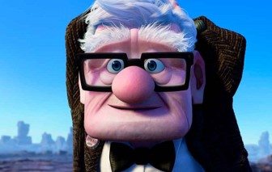

Menu
Início
Quem somos
Serviços
Contato
Biografia

Carl Fredricksen
(Nascido em 1931) é o protoganista do filme de 2009 da Disney/Pixar, Up-Altas Aventuras. Ele tem 78 anos um idoso viúvo a sua com balões.Ele é dublado por Edward Asner.
<p>Seu pc não possuir suporte para iframe</p>
Voltar para a página início